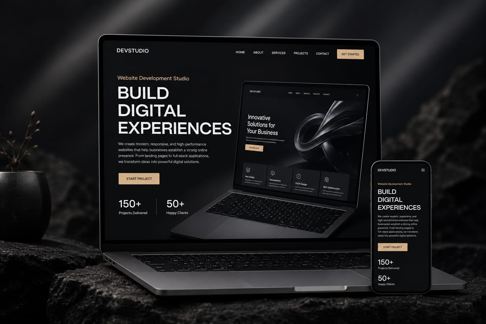

At our Web Design Studio, we create stunning, responsive, and user-friendly websites tailored to your business goals. Our team combines creativity, modern design trends, and the latest technologies to build digital experiences that engage visitors and drive results. From business websites and portfolios to e-commerce platforms, we deliver solutions that help brands grow and stand out online.

With years of experience in web design and development, I specialize in creating modern, visually appealing, and user-friendly websites. My strong understanding of design principles, user experience, and current web technologies allows me to transform ideas into engaging digital experiences. Through creativity, attention to detail, and continuous learning, I deliver websites that are both functional and impactful.